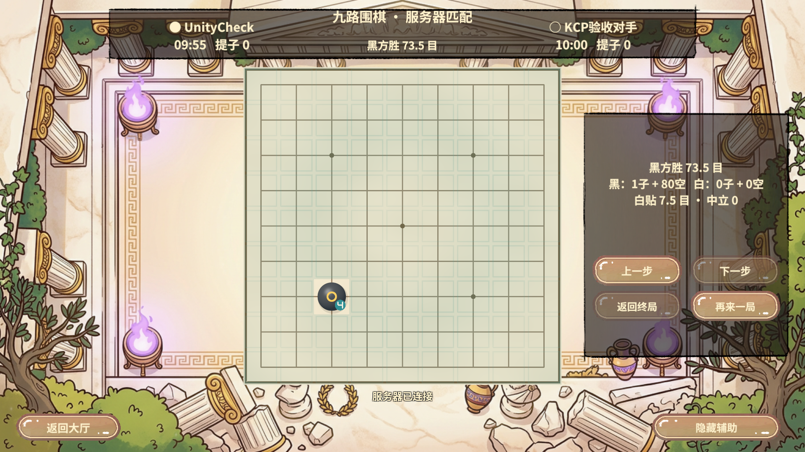
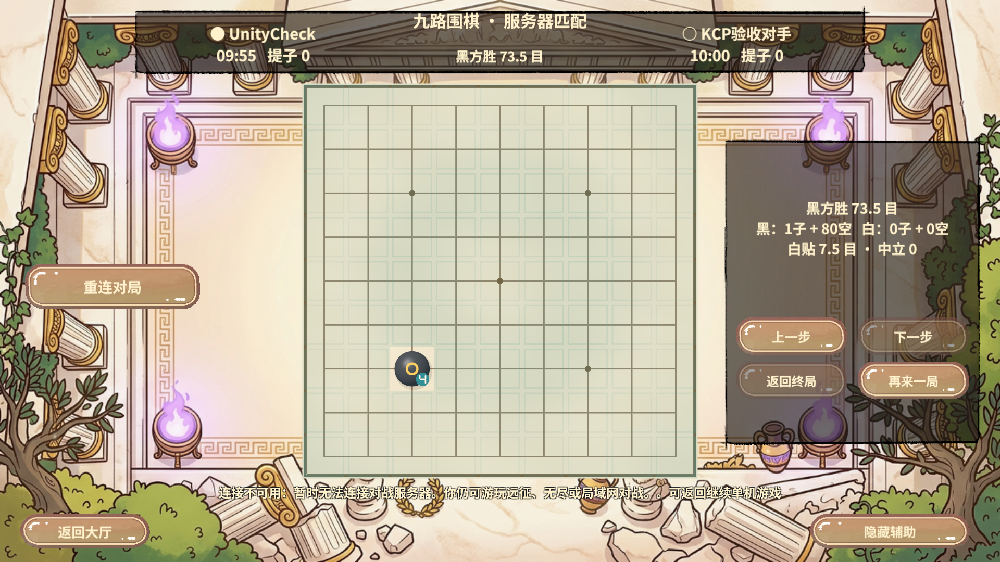
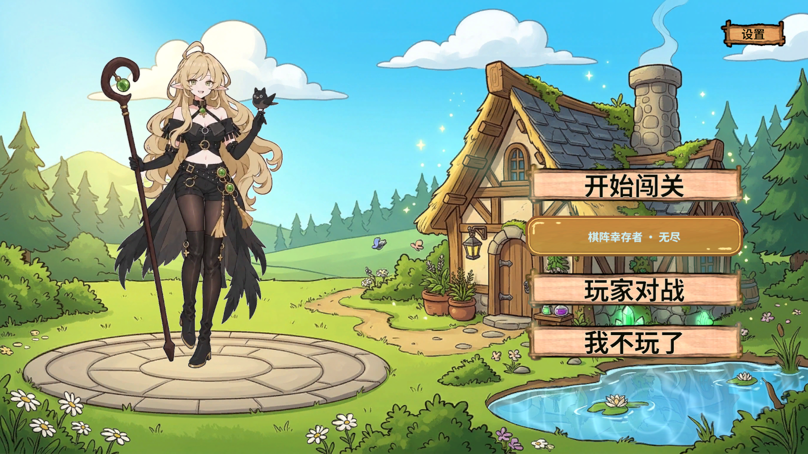
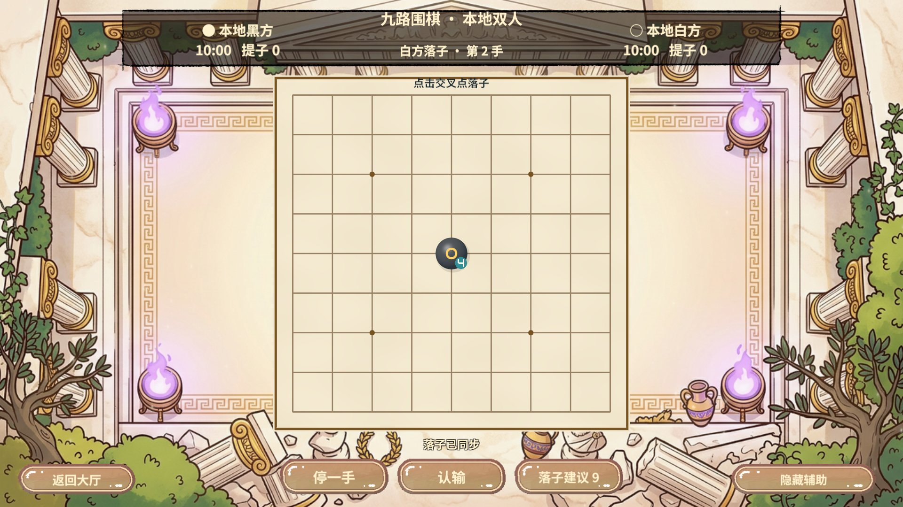
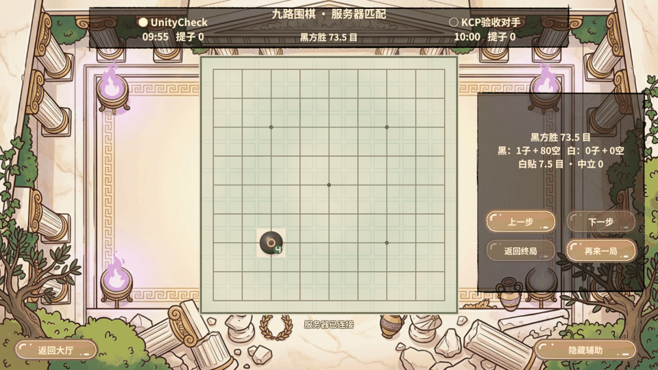

2026-11-06 · Unity 2022.3.15f1c1 · Fantasy 2026.1.2003 · Windows / 真实AB / 本机双端真实UDP
客户端Runtime.Connect固定FantasyRuntime.NetworkProtocolType.KCP；服务端Fantasy.config外网networkProtocol=KCP，端口仍为20000。无TCP自动回退。服务端实际日志为Outer KCPServer Listen 0.0.0.0:20000，Windows查到UDP20000绑定，未查到TCP20000监听。内部回环TCP11002为服务器内部通信，不承担PvP外网对局。
玩法、规则版本、握手、计时与重连契约不变。KCP使用已安装Fantasy原生实现，未另造UDP可靠层。历史TCP接收补丁与原始字节诊断仅保留为历史兼容资料，当前PvP不走该路径。未修改Revolution框架快照。
Unity编辑器通过RevCLI连接、刷新、编译、Play和停止；业务测试通过常驻项目RevMCP stdio，真实rev_discover(target=game,query=pvp)→rev_call→rev_run。通过计划20261106-200349-dc9e1e1a（终局）、20261106-200424-365d4b5c（停服回退）；重连和双方指纹比较由同会话编排脚本执行。
首次独立对手查询使用匿名属性对象，未被桥正确序列化；已改为项目同类Dictionary返回并重编译重跑。重跑曾在启动未就绪时进入PvP被拒绝，等待大厅就绪后重新发起。20261106-200306-2f38f11a中确认动作被同步等待门禁拒绝，序号仍为4；未放宽门禁，之后确认动作与最终状态断言通过。此前20261106-200008-4447588a终局计划已通过，但其后对手查询断言未通过，因此最终以修复后双端指纹结果为准。
Revolution的GameFlow/FSM、RevScope/RevLogic、RevUI、RevResManager及运行时自动化支持切换、加载与退出回收；Fantasy原生KCP支持当前围棋RPC和推送。仅证明本机Windows Editor真实AB下的功能正确性，未执行跨设备、手机、丢包/抖动仿真或TCP/KCP同条件延迟对照，不能宣称具体提速。本轮无资源变更、未重建AB。阶段GIF是实际截图串联，不是连续帧动画或性能数据。
| 计划 | 动作 | 结果 |
|---|---|---|
| 九路围棋KCP完整终局与重连验收 | pvp.state | 通过 |
| 九路围棋KCP完整终局与重连验收 | pvp.action | 通过 |
| 九路围棋KCP完整终局与重连验收 | pvp.state | 通过 |
| 九路围棋KCP完整终局与重连验收 | runtime.screenshot | 通过 |
| 九路围棋KCP停服回退与本地可用性验收 | pvp.state | 通过 |
| 九路围棋KCP停服回退与本地可用性验收 | runtime.screenshot | 通过 |
| 九路围棋KCP停服回退与本地可用性验收 | pvp.return | 通过 |
| 九路围棋KCP停服回退与本地可用性验收 | pvp.state | 通过 |
| 九路围棋KCP停服回退与本地可用性验收 | runtime.screenshot | 通过 |
| 九路围棋KCP停服回退与本地可用性验收 | pvp.enter | 通过 |
| 九路围棋KCP停服回退与本地可用性验收 | pvp.state | 通过 |
| 九路围棋KCP停服回退与本地可用性验收 | pvp.local | 通过 |
| 九路围棋KCP停服回退与本地可用性验收 | pvp.action | 通过 |
| 九路围棋KCP停服回退与本地可用性验收 | pvp.state | 通过 |
| 九路围棋KCP停服回退与本地可用性验收 | runtime.screenshot | 通过 |





清理：测试对手、Session/Scene已释放，Unity已停止Play，临时服务器已停止。原始JSON/脚本位于忽略目录.codex/work/pvp-fix-20261106；无ZIP，无Profiler录制，未提交或推送。